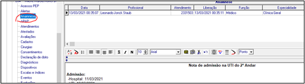
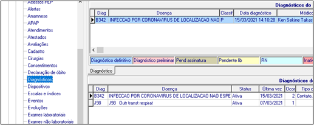
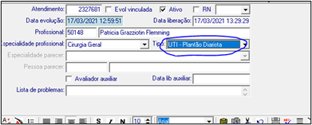
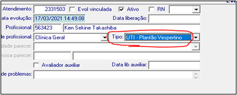
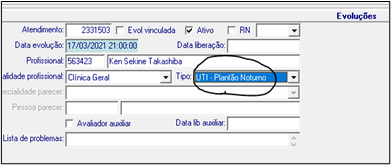

ADMISSÃO NA UTI
- História de admissão na aba "Anamnese".

- Prescrição do paciente na UTI (cancelar a prescrição de outro setor do mesmo dia).
- Solicitação de exames complementares de admissão necessários.
- Preencher aba "Diagnóstico" com o diagnóstico mais abrangente.

- Preencher na aba "Escalas" SAPS3, SOFA admissão, escala de TEV.
- Imprimir tabela de exames laboratoriais.
- Organizar o prontuário médico físico: folha de exames laboratoriais, prescrição do dia.
ROTINAS POR TURNO
Manhã: 08 - 14 horas
- Safety Huddle até 08h30
- Evolução diarista (completa)

- Prescrição do dia
- Checklist até 10h30
- Boletim médico nos horários determinados
Tarde: 14 - 20 horas
- Checagem de metas
- Evolução vespertina (intercorrências)

- Solicitação das rotinas de laboratório
- Boletim médico nos horários determinados
- Safety Huddle até 19h30
Noite: 20 - 08 horas
- Checagem de metas
- Evolução noturna (intercorrências)
